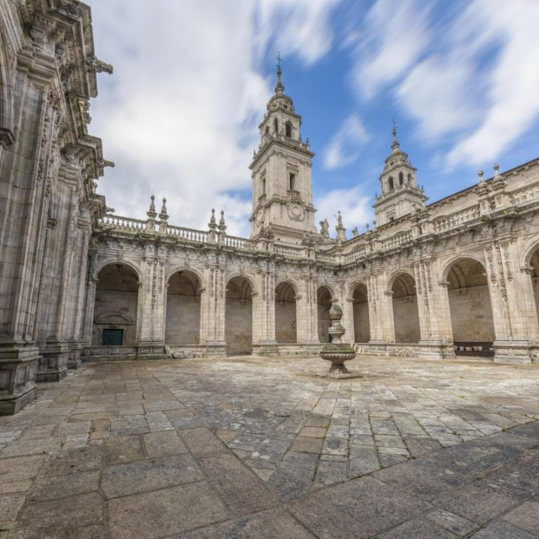
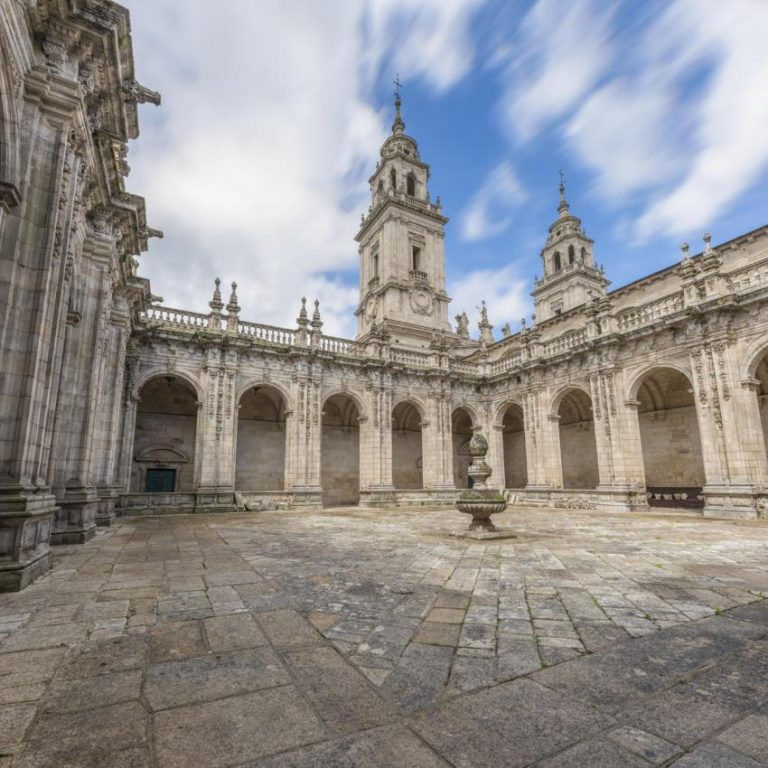

CATEDRAL
La catedral de Lugo invita a viajar por la historia, reflejada en sus muros como un gran libro abierto. Historia que se inicia en época tardorromana, tras la fundación de la ciudad por los romanos. Con la posterior evangelización, se construyó un templo en este mismo lugar, en torno al siglo I. No hay noticias de lo que pudo haber sido aquella primera iglesia de Lugo, pero si se conoce que a mediados del siglo VIII el obispo Odoario la restauró. En el XII destacará la figura de Raimundo de Monforte como maestro de obras. Más tarde, en el siglo XIV, tendrá lugar la mayor de las transformaciones de la catedral; seguida siglos después de otra remodelación ya en el XVIII, ocasionada en gran parte por los terribles terremotos acontecidos en Portugal. Internamente el templo presenta la planta más alargada y estrecha de los templos catedralicios hispanos. A pesar de la pluralidad de épocas, sus rasgos responden mayoritariamente a un estilo románico tardío. En su exterior destaca la portada románica de la Puerta Norte. La figura de Cristo en Majestad apoyado sobre un hermoso capitel en el que se representa la Última Cena, es uno de los símbolos de esta catedral. El templo, resumen y mezcolanza de todas las épocas arquitectónicas, permite un inigualable recorrido por la historia y el arte a través de la piedra.
 

En la capilla mayor de la catedral de Lugo se halla expuesto permanentemente el Santísimo Sacramento. Desde tiempos inmemoriales, día y noche. Este motivo, representado en el escudo de Galicia, convierte a la catedral lucense en un ejemplo único de adoración perpetua a Jesús. Se trata de una tradición única en el mundo. Por esta razón a Lugo se la conoce como Lugo Ciudad del Sacramento. La capilla mayor es el corazón espiritual de la catedral, al que sus habitantes acuden a rezar de forma casi continua. Déjese sorprender por las fantásticas pinturas de José Terán. Descubra el magnífico retablo de Corniellis de Holanda, colocado en los testeros del crucero: fantástica obra renacentista que representa una de las joyas de la escultura del siglo XVI en Galicia. Admire el hermoso conjunto que forman la capilla mayor, el transepto y el coro, además de la girola gótica. Elementos todos que nos recuerdan la bella historia de pervivencia, superación y transformación de esta catedral.